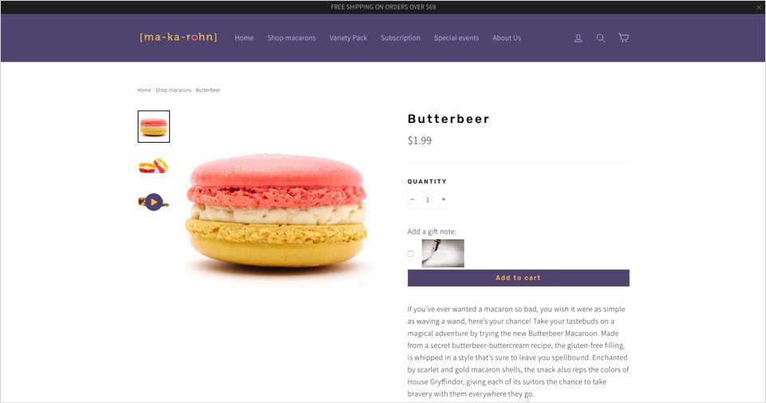

'Lette Macarons
Redesign Website & E-Commerce Experience
The Brief
Website Redesign to improve e-commerce checkout experience.
This project is not affiliated with 'Lette Macarons. The following work is a conceptual exercise to educate and refine UX/UI skills.
‘Lette Macarons is a franchise of shops selling gourmet macarons throughout California and Texas. Their boutique approach harnesses the upward trend favoring “Instagramable foods" through a colorful offering of unique flavors and customizable macarons. ‘Lette Macarons pushes for unique engagements in otherwise familiar touchpoints, which is demonstrated by the unconventional design of their website and checkout experience.
THE CHALLENGE
Website Redesign to improve e-commerce checkout flow and increase conversion rates.
THE SOLUTION
A clickable prototype that eases information density, guides users via a clear hierarchy of categories, and creates intuitive and efficient checkout experience.
THE PROCESS
On this project, I was able to complete the UX process through Step 5, going back and reiterating on an earlier design to incorporate branding and other usability adjustments.
Step 1: RESEARCH
Step 2: DESIGN
Step 3: PROTOTYPE
Step 4: TEST
Step 5: ITERATE
C&C analysis, heuristic analysis, personas, user flow, card sorting, paper prototype, branding, high-fidelity InvisionApp prototype
2 weeks at General Assembly
SketchApp, InvisionApp, Adobe Illustrator, Google Drive, Wacom tablet, whiteboard, markers, Post-It notes
Research
Evaluate & Analyze Websites
User Research
Synthesization
Persona
Journey Map
CURRENT WEBSITE EVALUATION
Using Jacob Nielsen's 10 Heuristics of Usability, I make a deep-dive into 'Lette's current website and compiled a list of usability violations. The chart below captures the highest-priority issues I encountered, the heuristic that was violated, and a metric of its severity to the user.

COMPETITIVE & COMPARITIVE ANALYSIS
Next, I searched for macaron shops located around, or that service, the Greater Los Angeles area- 'Lette's competitors- and reviewed their respective websites. I noted the differences between each website's features and layout.

LANDING PAGE & LAYOUT COMPARISON
'Lette's landing page immediately stands out compared to its competitors due to its unconventional navigation and layout: Their (1) Primary Navigation is cluttered with in-line French translations and is located on the left of the page, competing with both the (2) Secondary Navigation located at the top of the page and the off-center (3) Body Text. Together, these elements create an unclear visual hierarchy that disorients users and causes severe visual friction.

'LETTE'S LANDING PAGE
VS
MA-KA-ROHN'S LANDING PAGE

LADUREE'S LANDING PAGE

ONLINE ORDERS COMPARISON

The Baymard Institute has found that on average, online shopping carts are abandoned at a rate of 69.89%. Among the reasons, the need to create an account (which I later address) and a "too long/complicated checkout process" are top reasons users cite for this behavior. This is problematic for 'Lette as their process from landing page to checkout includes a lengthy and unconventional selection process (demonstrated below). Just imagine clicking through a bulk order!

'LETTE'S DRAG & DROP ORDERING PROCESS
VS
MA-KA-ROHN'S INPUT ORDERING
USER RESEARCH
To understand the unique pain points and needs of the typical 'Lette client, I created a screener survey to identify users who have purchased boutique desserts (online or in person) in the last 4 months. I then conducted follow-up interviews to understand their behaviors and mental models when making these types of online purchases.

I would order [macarons] online more, but the process is just so tedious ... a lot of times, I'm so caught up in the beginning with box selections that I don't even get to my order!

There is nothing more annoying than picking out the dessert I want, starting my checkout, and then finding out that I need to create an account- I'm done at that point; I don't want sweets that badly.

I love macarons ... but I've never really ordered them online. Some of the sites I've seen look kinda' shady ... how can I trust them with my food if they don't even care about their own website's appearance?
PERSONA & JOURNEY MAP
Through insights gathered from my interviews, I compile trending traits, motivations, and pain points to create a persona that helps stakeholders empathize with the user and their needs. Meet Kelsey Woods: Instagram Extraordinaire whose journey (map) through the current 'Lette website leaves much to be desired.

Design
Feature Prioritization
Information Architecture
Sketching
Wireframes
Branding
FEATURE PRIORITIZATION
To determine the scope of the project and where to concentrate my efforts for the MVP, I create a feature prioritization matrix to visualize which features would make the most impact at the lowest cost to create (first quadrant).
INFORMATION ARCHITECTURE
'Lette's navigation has proven to create visual friction for users, so to address this issue, I conduct both an open and closed card sort to understand what users consider intuitive/logical categorizations.

CLOSED CARD SORT
SKETCHING
After establishing a more intuitive and clear information architecture, I began rough sketches of the pages which were relevant to Kelsey’s frustrations: the Homepage, Macaron Menu, and Checkout Module.
LANDING PAGE
MACARON MENU
CHECKOUT MODULE
WIREFRAMES
I digitized and made adjustments to my sketches initial sketches to incorporate a more modern and elegant design; as I was designing with "mobile first" in mind, I visualized the design on a grid for a responsive web experience. I have also annotated my reasoning for the different design decisions I have made to address the original website's usability issues.
- Consolidated all navigation to the top of the page to reduce visual friction and leverage familiarity with the format.
- Incorporated 'Search' functionality for ease of access.
- Provided a quick highlight of available products at a glance.
- Made a grid overview of products to ease user's information density when comparing macarons.
- Created a pop-up modal to reduce clicking (to/from parent page) when reviewing product details; also provides dietary information in context.
- Replaced the "drag and drop" selection process with a straightforward input field.
Prototype
User Flows
Hi-Fi Wireframes
Prototype
USER FLOWS
On 'Lette's current website, it takes 10 Steps (not including the individual drag and drop selection process) to place a delivery order of macarons. On the ideal user flow, it takes 7 steps.
HI-FI WIREFRAMES
Building upon my mid-fidelity wireframes, I created high-fidelity wireframes for each step of the macaron ordering process as well as modals to overlay over the primary wireframes to simulate a dynamic e-commerce experience on InvisionApp.